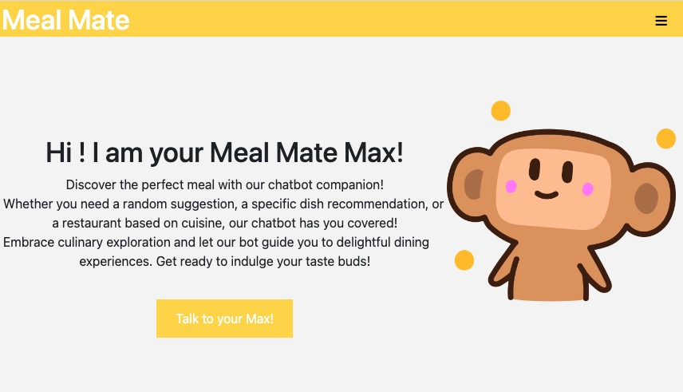

Haitian Wang 23815631
Meet MealMate, an innovative chatbot assistant designed to streamline the dining decisions of busy students and young professionals. Conceived to combat the fatigue of overwhelming food choices, MealMate simplifies the selection process through user-friendly interactions and personalized recommendations.
Our primary audience is the busy, food-loving demographic of students and professionals. The application serves as a virtual aide, offering dining suggestions tailored to unique tastes, dietary needs, and budget. Whether you need a quick lunch fix or seek a culinary adventure, MealMate is your reliable guide.
MealMate works by engaging in a user-friendly chat interface. Simply input your desired restaurant, type of cuisine, or even your current location, and MealMate uses its comprehensive database to suggest the best matches. This database encompasses a wide variety of dining places, from local gems and trendy cafes to popular eateries. Based on your inputs and preferences, MealMate provides useful information such as menus, operating hours, customer reviews, and delivery options for nearby establishments.
With MealMate, dining decision stress is a thing of the past. It empowers users with informed choices, saving valuable time and reducing meal-related anxiety. Enjoy a smarter, more efficient dining experience with MealMate, your personalized dining companion.
The feature enables users to rate and review restaurants and dishes they've tried. This offers firsthand knowledge of the restaurant's food quality, customer service, and overall dining experience. Users can also share photos of the dishes, enriching the visual experience for potential diners.
As a food lover, I want to rate the restaurant and the dishes after my meal, so that I can share my experiences and help other users make informed dining decisions.
The follow and chat feature allows users to follow each other and exchange messages. Users can share their culinary experiences, making the app more interactive and social. This feature also allows users to be notified about new reviews and ratings from users they follow.
As a social networkers, I want to follow other users and chat with them, so that I can share experiences and discover new food based on their reviews.
The project can be developed using a range of tools, starting with Visual Studio Code, a versatile text editor that supports numerous programming languages and comes with built-in support for Git. It provides excellent support for Python and HTML, which are the primary languages of our project. To manage the versions of your codebase effectively, I'd recommend GitKraken, a graphical user interface for Git that is intuitive and easy to use.
In terms of libraries for Flask application development, the following are invaluable:
Online tutorials such as those from Flask Mega Tutorial can provide great insights into using these tools effectively.
For third-party APIs, OpenAI API for AI interactions, Google Maps API for location services, and SendGrid API for email services would be excellent choices.
From my experience, open and regular communication is the key to successful group work. Use a common platform like Trello or Microsoft Teams where everyone can communicate effectively. Regular meetings should be set up to discuss progress, obstacles, and the next steps. It is also advisable to use a project management tool like Trello or Jira to track tasks, assign work, and follow progress. Transparency about the work done and challenges faced can help in timely resolution of issues and smooth functioning of the project.
The key to managing deadlines is to break down the project into manageable tasks and to create a timeline for each task. Tools like Google Calendar or Trello can help with this. It's essential to consider each team member's availability and other commitments while assigning tasks. Prioritize tasks based on their importance and dependencies. If a task is a prerequisite for other tasks or is critical for the project, it should be prioritized. It is also beneficial to have regular check-ins to track progress and adjust timelines and workload as necessary.